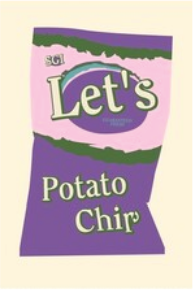

Specialty Flavor
The specialty flavor this fall is a delightful mix of sweet and salty in our new Caramel Cinnamon potato chip! Try it out while supplies last!
Current Deals
Buy one bag, get one free at participating Walmarts across the nation until the end of the year!
Our Story
What started as a means of avoiding copyright claims gave way to a brand that's fun, delicious, and no longer fictitious!
What began as a playful, fictional brand to avoid copyright issues has now become a beloved reality. Let's was originally created as a quirky, fun concept for a TV show that aimed to capture attention and spark laughter. But something unexpected happened: people loved the idea. They were drawn to the unique flavor profiles, the bold packaging, and the fun spirit of our chips.
Seeing the excitement and demand, we decided to take the leap from fiction to reality. With the same creativity that first captured imaginations, we started crafting small-batch, hand-made potato chips using high-quality ingredients and unique flavor combinations.
Our mission is simple—bring people together through snacks that are as fun, bold, and unexpected as our story. Whether you're snacking at home, at a party, or on the go, we’re here to offer something different: potato chips with personality.
What started as a fake brand is now a real sensation. Thank you for joining us on this journey from screen to snack aisle. Let’s keep having fun with flavor!